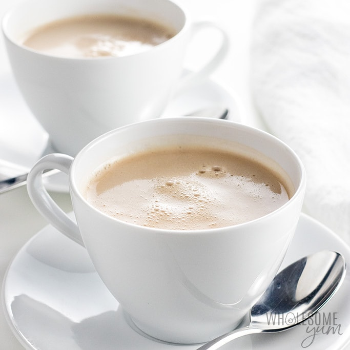

What is Chai Tea?

The pale tea that North Americans typically drink is nothing close to the tea drunk by millions of Pakistanis.
Pakistani tea, called chai in Urdu, is rich and milky, deeply coloured, steaming hot, and boldly flavourful with a definite need for sugar to offset the toasty bitterness. The word chai just means tea.
Chai = tea.
Ingredients
- Water
- Milk
- Lots of tea leaves or tea bags for strong infusion
- Plenty of sugar
Recipe
- Bring water, milk and spices to a simmer in a small saucepan on the stove (adding the spices from the start gives them plenty of time to infuse).
- Reduce heat and add in black tea to brew.
- Wait for tea to steep (do not boil it at this point or the tea releases too many tannins – those bitter compounds that make your mouth feel dry).
- Strain the warm spiced mixture into a mug; this will hold back the whole spices and tea leaves.
- Stir sugar into your chai and sweeten to taste. Enjoy!